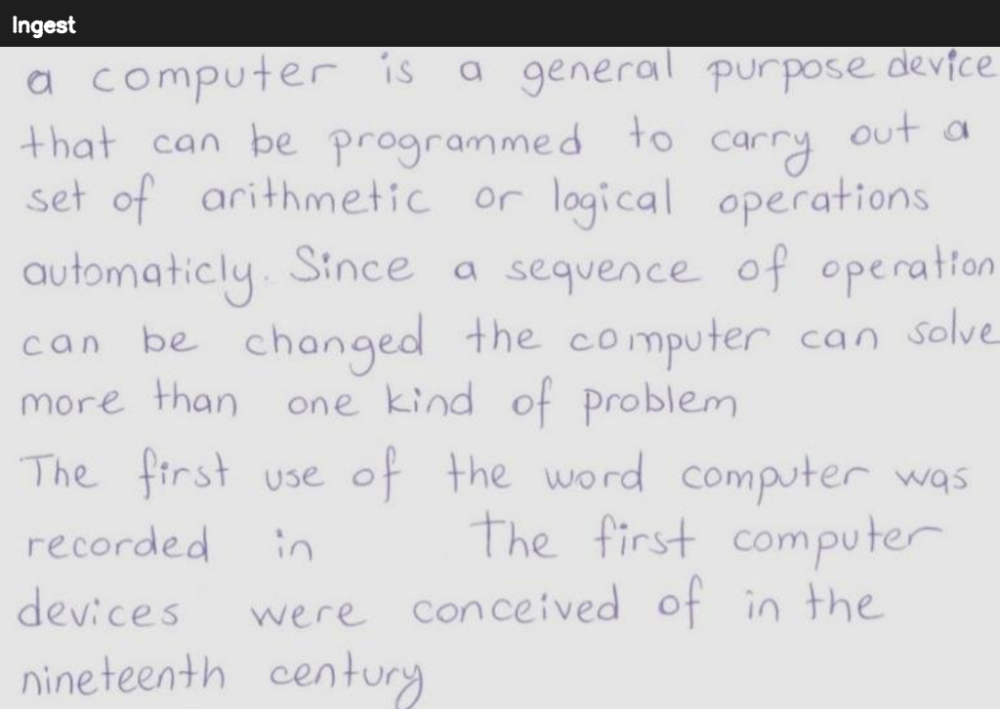
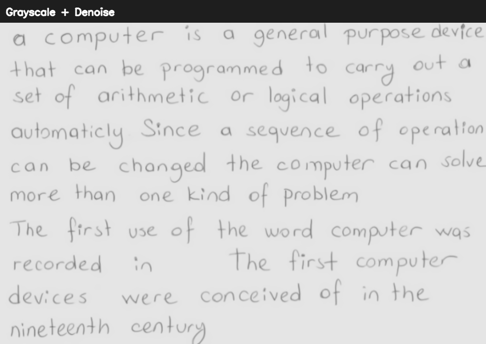
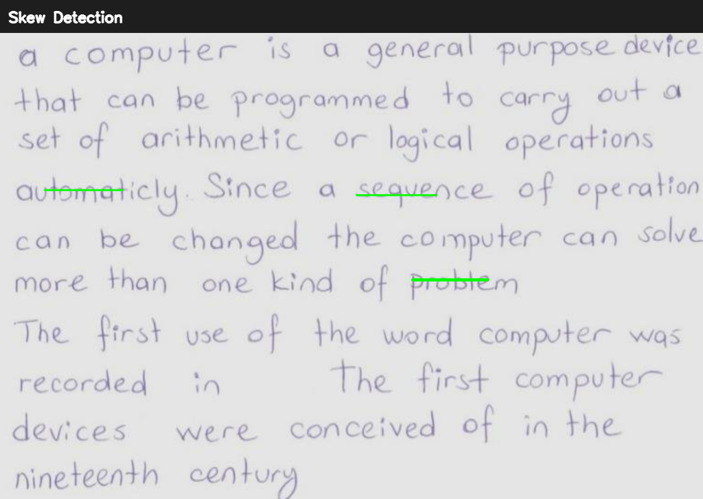
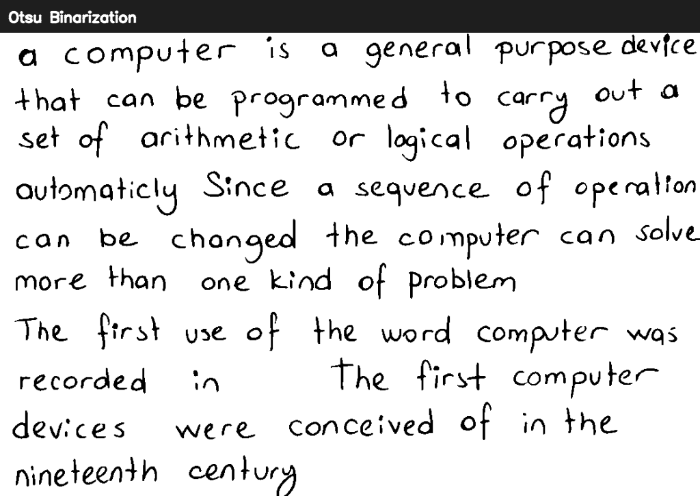
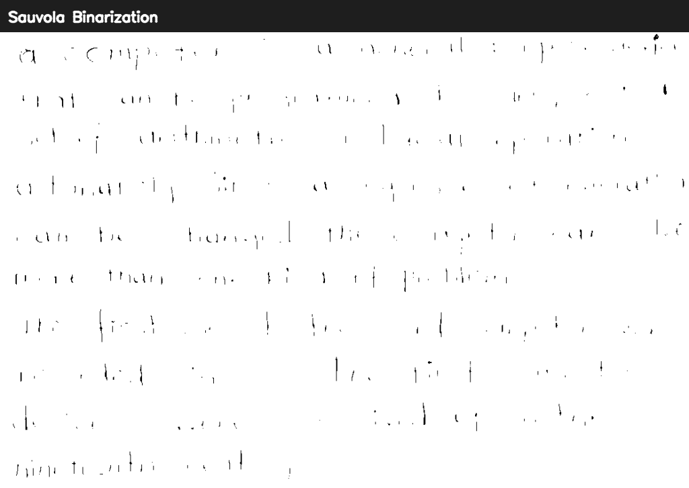
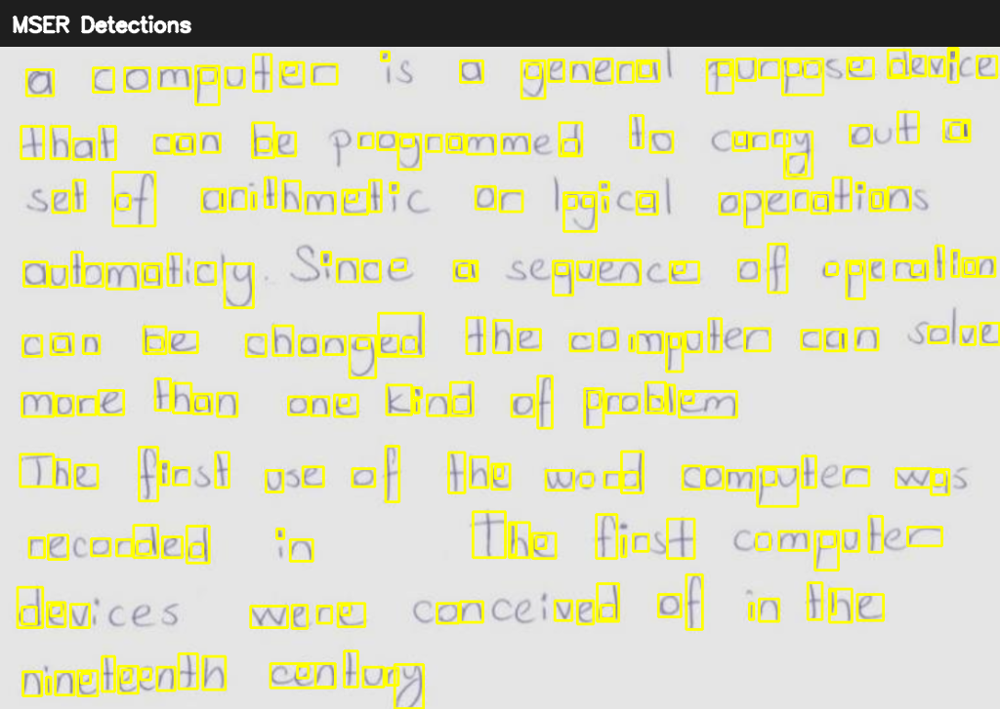
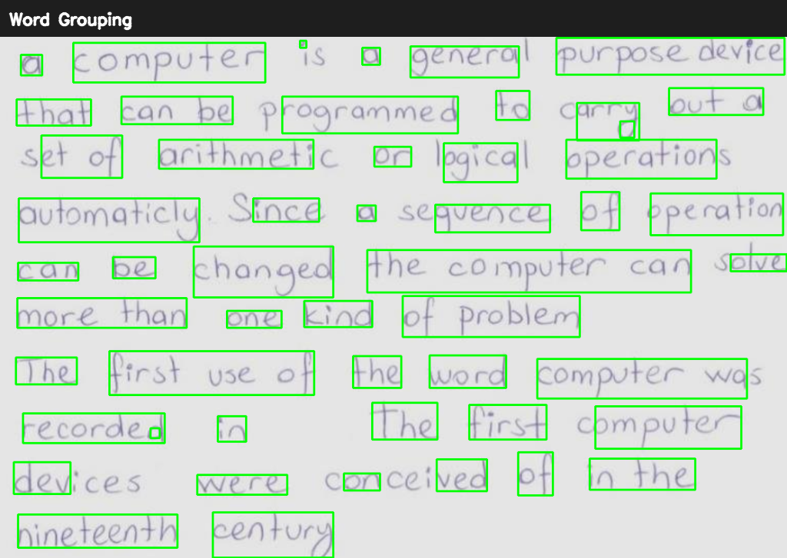
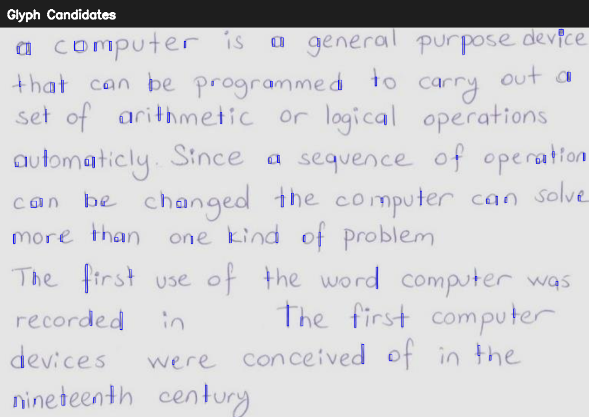
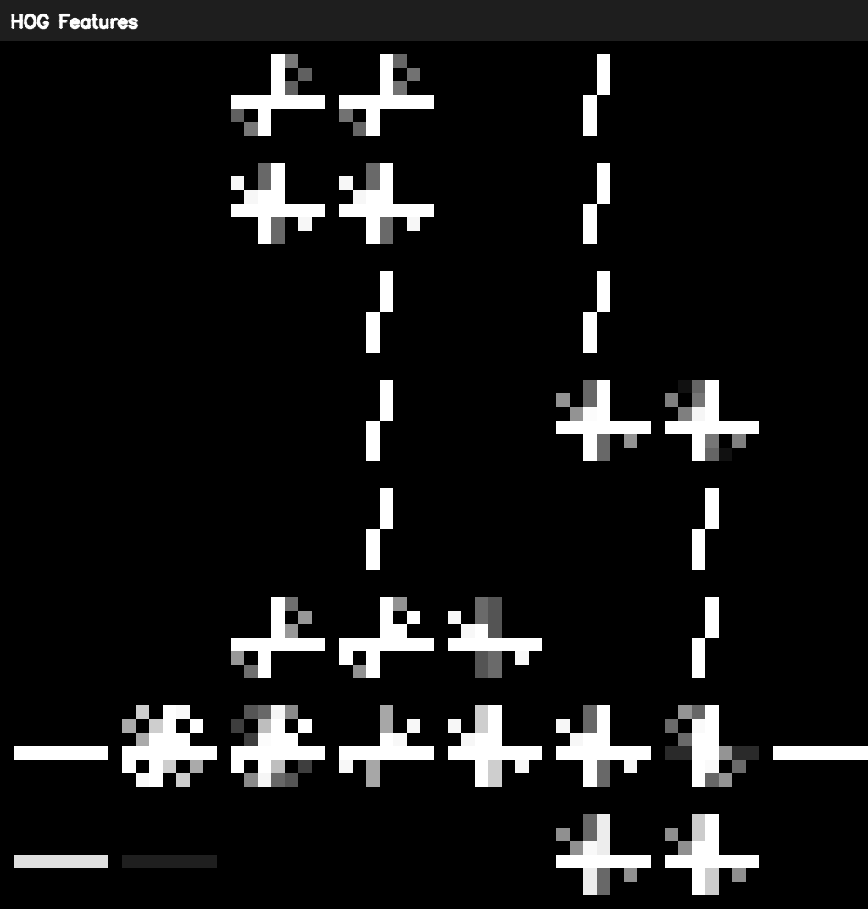

Original input image read from disk.
Converted to grayscale and denoised for stable thresholding.
Detected line segments; estimated skew angle 0.00°.
Global thresholding for clean scans.
Local thresholding for uneven illumination.
MSER-based text region proposals in natural scenes.
Grouped MSER components into word boxes.
Connected components inside detected regions as glyph candidates.
Gradient structure visualization for a sample glyph.
Overlay predicted words with confidences on word boxes.